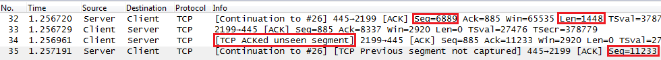
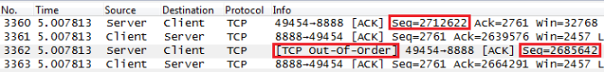
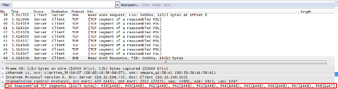
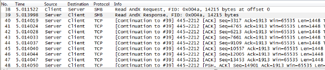
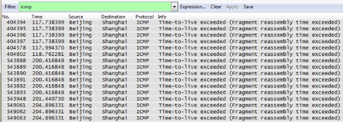

Wireshark的提示
1. TCP ACKed unseen segment¶
当Wireshark发现被ACK的那个包没被抓到，就会提示 TCP ACKed unseen segment 。这可能是最常见的Wireshark提示了，幸好它几乎是永远可以忽略的。
以图3为例，32号包的Seq+Len=6889+1448=8337，说明服务器发出的下一个包应该是Seq=8337。而我们看到的却是35号包的Seq=11233，这意味着8337～11232这段数据没有被抓到。这段数据本应该出现在34号之前，所以Wireshark提示了 TCP ACKed unseen segment 。

图3
{kind=link}
不难想象，在一个网络包的开头会经常看到这个提示，因为只抓到了后面的Ack但没抓到前面的数据包。
2. TCP Out-of-Order¶
在TCP传输过程中（不包括三次握手和四次挥手），同一台主机发出的数据包应该是连续的，即后一个包的Seq号等于前一个包的Seq+Len。也可以说，后一个包的Seq会大于或等于前一个包的Seq。当Wireshark发现后一个包的Seq号小于前一个包的Seq+Len时，就会认为是乱序了，因此提示 TCP Out-of-Order 。
2.1. 示例1：¶
如图4所示，3362号包的Seq=2685642小于3360号包的Seq=2712622，所以就是乱序。
 图4
{kind=link}
小跨度的乱序影响不大，比如原本顺序为1、2、3、4、5号包被打乱成2、1、3、4、5就没事。但跨度大的乱序却可能触发快速重传，比如打乱成2、3、4、5、1时，就会触发足够多的Dup ACK，从而导致1号包的重传。
2.2. 示例2：¶
Wireshark在获取包序号26时发现seq=18981，而包序号25的数据包seq = 20441，所以wireshark认为数据包顺序错了，提示 TCP Out-of-Order
{kind=link}
3. TCP Dup ACK¶
当乱序或者丢包发生时，接收方会收到一些Seq号比期望值大的包。它每收到一个这种包就会Ack一次期望的Seq值，以此方式来提醒发送方，于是就产生了一些重复的Ack。Wireshark会在这种重复的Ack上标记 TCP Dup ACK。
3.1. 示例1¶
以图5为例，服务器收到的7号包为“Seq=29303, Len=1460”，所以它期望下一个包应该是Seq+Len=29303+1460=30763，没想到实际收到的却是8号包Seq=32223，说明Seq=30763那个包可能丢失了。因此服务器立即在9号包发了Ack=30763，表示“我要的是Seq=30763”。由于接下来服务器收到的10号、12号、14号也都是大于Seq=30763的，因此它每收到一个就回复一次Ack=30763，从图中可见Wireshark在这些回复上都标记了 TCP Dup ACK。
{kind=link}
3.2. 示例2：¶
此时就会Ack就说我想获取seq=28852的数据包而你给了我其他包。
客户端117.136.81.177包序号41和42到达服务器之后（包序号异常，理应先42后41），服务器115.28.150.86上发送包序号43的应答，是针对包序号41所做的应答，在服务器发送包序号40时就说，我希望获取seq=28852的数据包，但是接下来获取数据包41的seq=30312,所以服务器在发达应答的时候，发送Ack=28852,SLE=30312 SRE=31560用于提示客户端，其中SLE：Sequence Left Edge(序列号左边界值) SRE:Sequence Right Edge（序列号有边界值）。Wireshark 添加解释：TCP Dup ACK 40**1。其中40表示对包序号40重复，**号之后的1表示重复次数为1次。
{kind=link}
4. TCP Fast Retransmission¶
当发送方收到3个或以上**TCP Dup ACK**，就意识到之前发的包可能丢了，于是快速重传它（这是RFC的规定）。
4.1. 示例1¶
以图6为例，客户端收到了4个Ack=991851，于是在1177号包重传了Seq=991851。
 图6
图6
4.2. 示例2¶
当服务器115.28.150.86连续发送了1165、1168、1169三条应答之后，客户端快速重传seq=291935的数据包
{kind=link}
5. Continuation to #¶
你看到这个提示，说明已经在Edit->Preferences->Protocols->TCP菜单里关闭了Allow sub dissector to reassemble TCP streams。
比如图10的那些包，一关闭就变成图11这样。
图10 
{kind=link}
图11 
{kind=link}
仔细对比图10和图11，你会发现Read Response在图10中被算在了48号包头上，而在图11中被算到了39号包头上。这样会带来一个诡异的结果：图10的读响应时间为2.528毫秒（38号包和48号包的时间差），而图11的读响应时间为2.476毫秒（38号包和39号包的时间差）。究竟哪个算正确呢？这个问题很难回答，如果在乎的是实际的总性能，那就看前者；如果想忽略TCP/IP协议的损耗，单看服务器的响应速度，那就看后者。在某些特殊情况下，这两者相差非常大，所以必须搞清楚。
6. Time-to-live exceeded (Fragment reassembly time exceeded)¶
ICMP的报错有好多种，大都不难理解，所以我们只举其中的一种为例。 Fragment reassembly time exceeded 表示这个包的发送方之前收到了一些分片，但是由于某些原因迟迟无法组装起来。
比如在图12中，由于上海发往北京的一些包被分片传输，且有一部分在路上丢失了，所以北京方无法组装起来，便只好用这个ICMP报错告知上海方。
图12 
{kind=link}
7. TCP Keep-Alive¶
8. TCP Keep-Alive Ack¶
9. Fragmented IP Protocol¶
ping -s 2000 4.4.4.4